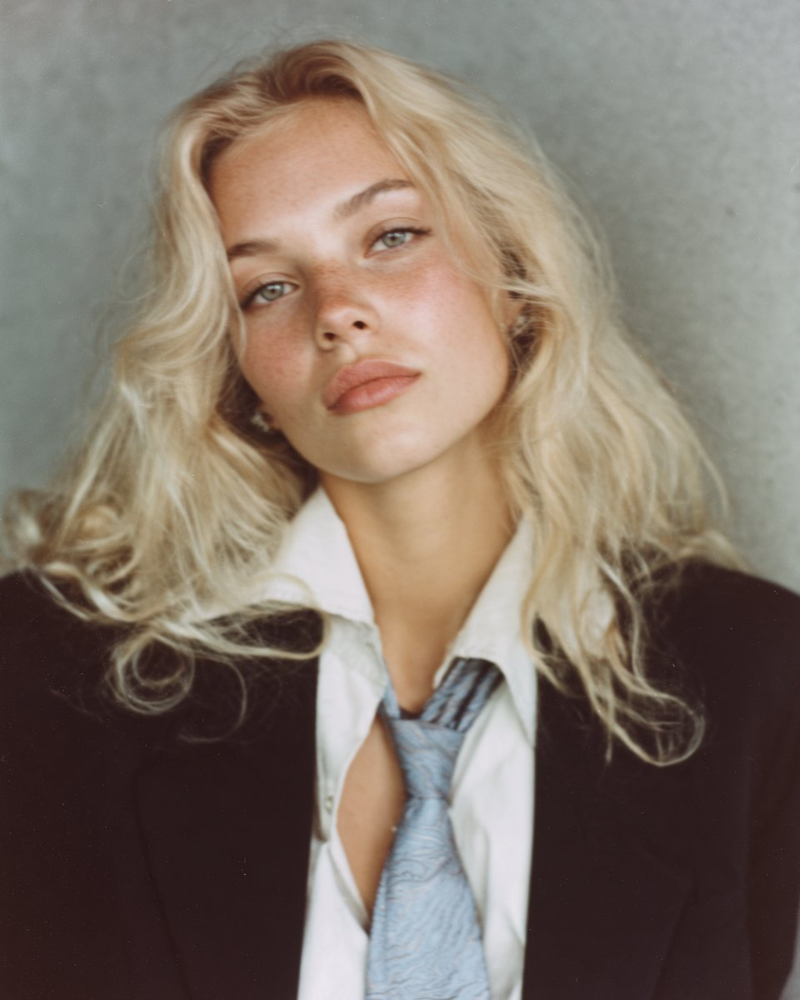
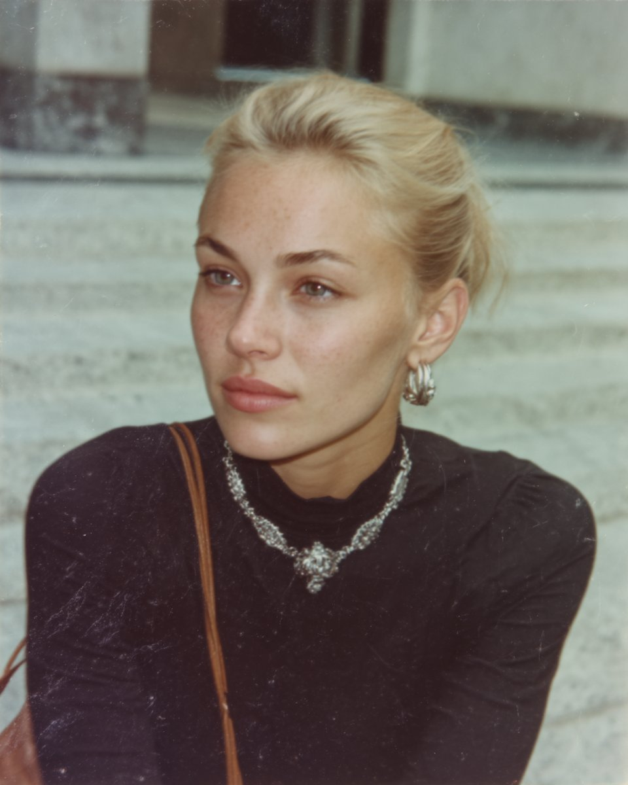
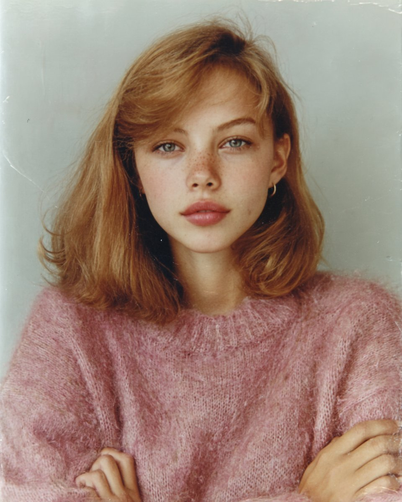
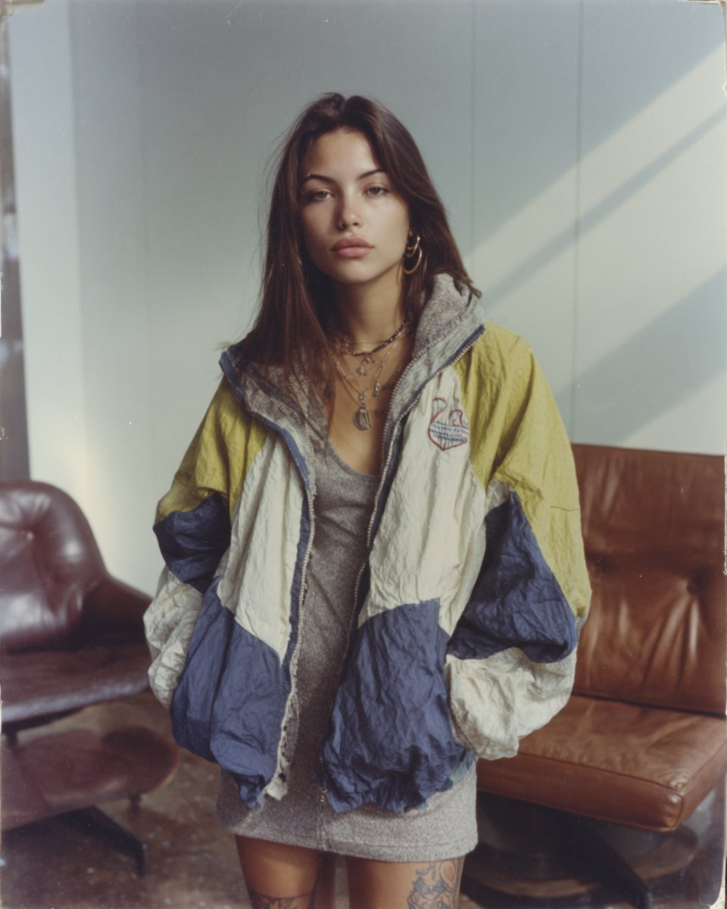
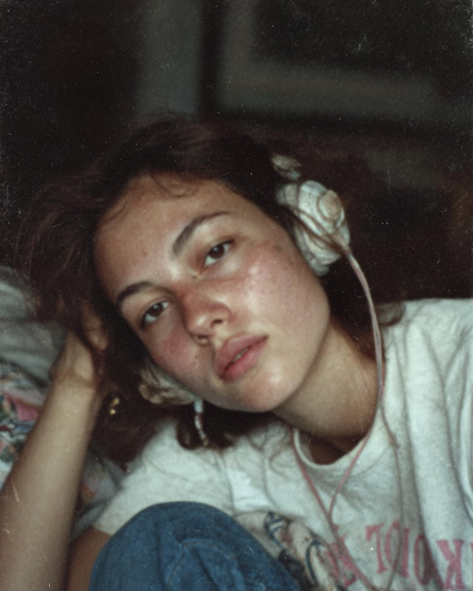
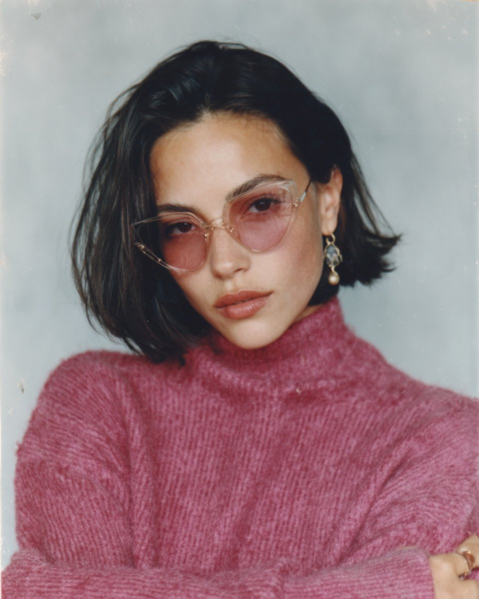
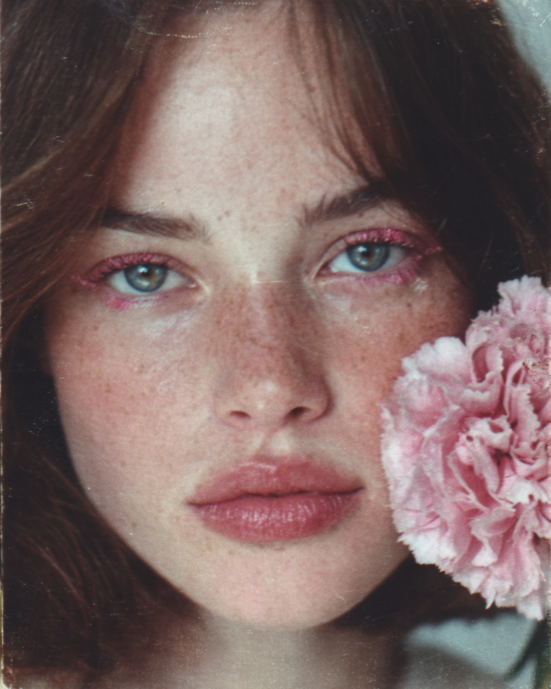

Uzyskałam powtarzalność klimatu analogowych zdjęć w Midjourney. Pokażę Ci, jak to zrobiłam.


01 · studio
03 · daylight
05 · editorial
08 · candid
09 · b&w
10 · 2000s--sref to parametr Midjourney, który „pamięta” styl wybranego zdjęcia: kolory, tekstury, klimat, ziarno. Pozwala nam skopiować styl (ale nie dokłaną treść) i wiernie go odtworzyć w kolejnych wygenerowanych wynikach.
Oto przykładowy prompt, który możesz przetestować w Midjourney. Najważniejsze jednak są parametry na końcu - one muszą zostać, bo to one trzymają styl. Dlatego treść prompta możesz zbudować dowolnie - liczą się dodane na końcu parametry.
Nie bardzo rozumiesz, co oznaczają parametry na końcu promptu? Oto wyjaśnienie.
"Kopiujesz" styl ze zdjęcia referencyjnego do każdej kolejnej generacji. Możesz podać ID albo link do obrazu — Midjourney potraktuje go jako wzór stylu.
Poprzez polubienie lub wybór zdjęć, Midjourney rozpoznaje, jaki rodzaj estetyki preferujesz. Z czasem model uczy się, co lubisz. Im dłużej używasz, tym bardziej Cię rozumie. Personalizacja to paramter wyglądający np. tak: --p ylfaht8. Dodając go na w prompcie, odwzorowujesz styl, który zawiera.
Wysoki --stylize = Midjourney ma więcej swobody artystycznej. Niska wartość - MJ ściślej dopasowuje się do promptu, ale wynik jest mniej "artystyczny".
Wyłącza domyślne "upiększanie" nadawane przez model. Wynik staje się bardziej realistyczny i surowy. Bliżej naturalnej fotografii, dalej od płaskiego i sztucznego efektu.
Paramter służocy do określania formatu. 4:5, 3:4, 2:3 - te sprawdzą się najlepiej, ale nic nie stoi na przeszkodzie, by go zmienić.
Nie próbuj tworzyć idealnego piękna. Zamiast tego, skup się na mankamentach, które budują realizm. Użyj: visible pores, freckles, subtle imperfections. Kontroluj parametry techniczne aparatu oraz pamiętaj, by określić typ ujęcia.
To tam publikuję nowe tutoriale. Będzie mi miło, gdy mnie wesprzesz swoją obecnością : )
Przejdź do profilu @natalie.kreatywnie